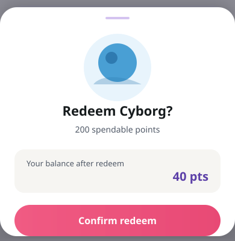

How do we make earn-and-spend legible before scaling the rewards marketplace?
Attendance and time-on-platform were falling while points piled up with nowhere to go. I ran a foundational study—problem frame, design-system stimulus, and moderated testing—to define one earn-and-spend story product could ship before marketplace UI scaled.

Product Byju's FutureSchool
Attendance and time-on-platform were falling while points piled up with nowhere to go. I ran a foundational study—problem frame, design-system stimulus, and moderated testing—to define one earn-and-spend story product could ship before marketplace UI scaled.
Details
K-8 web & mobile · math learningplatform
Design lead · foundational studyrole
Product · CXO · Engineeringstakeholders
8 weeksduration
Tech stack
Problem Loop not legible
Learners earned points and creator coins but could not describe how to spend them. Attendance and session time dropped while the product prepared to scale marketplace and avatar UI—without a validated earn-and-spend story in the journey.
Approach Design practice
I framed the retention question with product, built moderated stimulus on the design system (not throwaway comps), and paired every verbatim to the frame on screen. Engineering reviewed the same components before recommendations became a ship plan.
Outcome Shippable foundation
One ledger, onboarding before the shop, and aspiration-led marketplace framing—staged so ledger clarity shipped first. Post-launch: 43% higher attendance and 27% higher course completion in the weeks from the milestone.
Impact
43%
Higher attendance
From launch milestone · directional programme metric
27%
Course completion
Students who finished the course
15
In-depth interviews
Grades 1–8 · US + IN
Objective
Validate the earn-and-spend mental model before UI scales.
Problem
Retention slipped when the rewards loop was hard to read.
My role / Methodology: My role and methodology
One practice, end to end.
Insights: User testing
Evidence stays on the artefact.
Recommendations: Recommendations and implementation guide